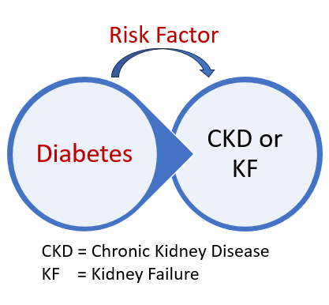

1 Degrees of Beliefs and Evidence
1.1 Learning Objectives
By the end of this week you should be able to:
Understand Bayesian philosophy.
Describe the motivation of doing Bayesian analysis.
Understand the difference between Bayesian and classical statistical methods.
Interpret a real-life problem in Bayesian context.
1.2 Learning Activities
This week’s learning activity include:
| Learning Activity | Learning Objectives |
|---|---|
| Video | 1,3 |
| Readings | 2,3,4 |
| Exercises | 4 |
| Live tutorial/discussion | 1,2,3,4 |
1.3 Learning Outcomes
LO1, LO2
1.4 Background
Thomas Bayes, who is remembered through the term “Bayesian,” passed away in 1761 without having the chance to formally present or publish his groundbreaking findings. Two years after his death, it was Richard Price who, in 1763, introduced Bayes’ extraordinary work to the Royal Statistical Society. Bayes had been carefully constructing a probabilistic framework to tackle inverse problems. Concurrently, Richard Price (1723–1791) and Pierre-Simon Laplace (1749–1827) played crucial roles in advancing and applying this transformative idea to practical real-world scenarios.
To fully understand the Bayesian framework, it is essential to become familiar with several key terms commonly used in Bayesian discussions, such as Bayesian inference, prior, posterior, and Bayesian modeling. Throughout this course, we will gradually explore these fundamental concepts. Before deeply examining these important terms, it is beneficial to consider the Bayesian philosophy.
1.5 Bayesian Philosophy
Bayesian philosophy revolves around the notion of degrees of belief to elucidate scientific reasoning. This concept is emphasized here for frequent reference throughout the discourse. But what do “degrees of belief” entail? They can be interpreted in terms of probability. For example, this notion could pertain to the scientific understanding of the probability of developing chronic kidney disease. Consequently, “degrees of belief” signify the fluctuation in the probability of having chronic kidney disease as understanding of the disease evolves. How does this understanding progress? It progresses through the acquisition of new data or information.
Let’s explain a bit more:

Diabetes acts as a risk factor for chronic ailments such as chronic kidney disease (CKD) and is also a persistent condition by itself. In a hypothetical scenario, an individual believes their blood sugar levels are well-regulated and confirms this belief using a home testing kit from a pharmacy, which indicates that the levels are indeed satisfactory. The question emerges: How reliable is this assumption for the individual? Quantitatively assessing this involves assigning odds. In the frequentist interpretation, which considers probability as a long-run frequency requiring numerous data points, this question lacks pertinence. This is where classical or frequentist views encounter constraints. Conversely, the Bayesian interpretation conceptualizes probability as a subjective measure of belief that adjusts based on existing knowledge and evidence. This approach, encapsulated in the concept that “evidence changes probabilities,” acknowledges that collective evidence influences beliefs. Bayesian inference, which provides a departure from classical thought, will be examined in the forthcoming lecture.
Gelman and Shalizi (2013)
1.6 The Maze
Bayesian analysis is a logical framework that helps update our beliefs based on new information. It allows us to reason about uncertainty by combining what we already know with evidence we gather to refine our understanding.
A helpful analogy is navigating a maze with an incomplete map. Each step provides new clues, and with every clue, your understanding of the maze improves. By continuously updating your knowledge with new information, you eventually find the exit. This is how Bayesian analysis works—it continuously updates our understanding as more evidence comes in.
To see this in practice, consider a doctor diagnosing a patient’s illness. Initially, the doctor forms a hypothesis based on the patient’s symptoms and medical history. For instance, they might think there’s a 60% chance of a respiratory infection, a 20% chance of asthma, and a 20% chance of another condition. This initial estimate represents the prior belief. The doctor then orders a chest X-ray, which reveals signs typically associated with respiratory infections. This new evidence increases the likelihood of that diagnosis compared to the alternatives. By combining the initial belief with the X-ray results, the doctor updates the probabilities, now thinking there’s an 80% chance of a respiratory infection, 10% for asthma, and 10% for something else. Additional tests, such as blood work or lung function tests, provide further evidence, allowing the doctor to refine the probabilities until they are confident in the diagnosis.
This iterative process is what makes Bayesian analysis so powerful. It doesn’t discard initial beliefs but continuously refines them in light of new evidence. Whether used in medicine, machine learning, or everyday decisions, Bayesian methods ensure that our conclusions are informed, logical, and adaptable as more information becomes available.
1.7 Concepts: Classical vs. Bayesian
McElreath (2020)
History:
The development of Bayesian statistical inference dates back to the late 18th century, preceding many contemporary methodologies. Its application continued into the 19th century. However, after World War I, statisticians like Sir Ronald Fisher, who opposed Bayesian concepts, reduced its prominence. Fisher’s 1925 statistical handbook made only scant mention of Bayesian analysis, then referred to as “inverse probability,” thus diminishing its influence in mainstream statistics. Throughout the latter half of the 20th century, Bayesian analysis gradually regained acceptance. The advent of novel computational technologies in the 1990s significantly increased the application of Bayesian methods.
Data and Parameter:
Data represents known elements, whereas parameters are unknown quantities inferred from data. Within the Bayesian framework, this distinction becomes less clear; a variable may be either observed or unobserved, yet it is governed by the same distribution function. Consequently, an assumption can serve as a “likelihood” or a “prior” depending on the context, without altering the model. This connection between certainty (data) and uncertainty (parameters) facilitates the management of measurement errors and missing data in modeling.
Reliable Inference:
There exists a notion that a specific number of observations is necessary for reliable statistical estimates. For example, at least 30 observations are typically required for a Gaussian distribution. This notion is rooted in traditional statistical inference, where methods are validated for large sample sizes, a concept known as asymptotic behavior, which introduces uncertainty with smaller samples.
Conversely, Bayesian estimates remain valid regardless of sample size. While larger samples are advantageous, Bayesian methods provide meaningful results even with limited data. However, they necessitate a careful selection of the “prior,” which significantly influences the final inference. An improperly chosen prior can skew conclusions. Understanding the world demands thoughtful consideration, without resorting to shortcuts.
Role of Data:
The distinctions between Bayesian and non-Bayesian methodologies are notable, yet these differences can sometimes overshadow their underlying commonalities. In many Bayesian and non-Bayesian models, the most critical assumptions typically concern the likelihood functions and their connections with the parameters. These assumptions guide the inferences drawn from each dataset. As the sample size grows, the significance of the likelihood increases. This shared emphasis on likelihood clarifies why Bayesian and non-Bayesian inferences frequently yield similar results.
Furthermore, a common misunderstanding regarding Bayesian data analysis and inference is the belief that they are exclusively defined by Bayes’ theorem. Any inferential method employing probability theory incorporates Bayes’ theorem. Numerous examples labeled as “Bayesian” often lack distinctive attributes and instead rely on observed data frequencies, resembling non-Bayesian methods. The distinctiveness of Bayesian techniques lies in their application of Bayes’ theorem to measure the uncertainty associated with theoretical constructs not directly observable, such as parameters and models. Both methodologies can produce robust inferences, although they are grounded in different principles and entail unique trade-offs.
1.8 Dual-Factor Probabilities
Kruschke (2014)
Bayesians do not imagine repetitions of an experiment in order to define and specify a probability. A probability is merely taken as a measure of certainty in a particular belief. Before digging into Bayesian theorem, let’s understand some key concepts. For example, there are many situations in which we are interested in the conjunction of two outcomes. As a specific example for developing these ideas, consider a situation where the probabilities of various combinations of people’s eye color and hair color. The data come from a particular convenience sample (Snee, 1974), and are not meant to be representative of any larger population.

The above Table considers four possible eye colors, listed in its rows, and four possible hair colors, listed across its columns. In each of its main cells, the table indicates the joint probability of particular combinations of eye color and hair color. For example, the top-left cell indicates that the joint probability of brown eyes and black hair is 0.11 (i.e., 11%). Notice that not all combinations of eye color and hair color are equally likely. For example, the joint probability of blue eyes and black hair is only 0.03 (i.e., 3%).
We may be interested in the probabilities of the eye colors overall, collapsed across hair colors. These probabilities are indicated in the right margin of the table, and they are therefore called marginal probabilities. They are computed simply by summing the joint probabilities in each row, to produce the row sums. For example, the marginal probability of green eyes, irrespective of hair color, is 0.11. The joint values indicated in the table do not all sum exactly to the displayed marginal values because of rounding error from the original data.
We often want to know the probability of one outcome, given that we know another outcome is true. For example, suppose I sample a person at random from the population. Suppose I tell you that this person has blue eyes. Conditional on that information, what is the probability that the person has blond hair (or any other particular hair color)? It is intuitively clear how to compute the answer: We see from the blue-eye row of Table 4.1 that the total (i.e., marginal) amount of blue-eyed people is 0.36, and that 0.16 of the population has blue eyes and blond hair. Therefore, of the 0.36 with blue eyes, the fraction 0.16/0.36 has blond hair. In other words, of the blue-eyed people, 45% have blond hair.We also note that of the blue-eyed people, 0.03/0.36 = 8% have black hair.
1.9 Bayes’ Theorem
Let’s now go back to the example related to diabetes and CKD. Where, I guessed that my blood sugar levels were in control, and now I am interested in testing my guess with a test kit that I bought from a chemist. After testing, I found out that my sugar levels are actually on the right track! Thus, we have two events:
- The hypothesis that my guess (< limit) is correct \((G=[+])\).
- The evidence: Low-level of sugar reading from the test, i.e., < limit \((E)\).
Now, given this experimental evidence, how sure am I that my guess about the blood sugar level is accurate?
\[ Pr(\text{Guess is correct} | \text{Evidence}) = \text{ ?} \]
Hence, the Bayes theorem states:
\[ Pr(\text{G=[+]}|\text{E}) = \frac{Pr(\text{G=[+]})\times Pr(\text{E}|\text{G=[+]})}{Pr(\text{G=[+]})\times Pr(\text{E}|\text{G=[+]})+Pr(\text{G=[-]})\times Pr(\text{E}|\text{G=[-]})} \] where, \(Pr(\text{G=[+]})\) and \(Pr(\text{G=[-]})\) are the probabilities of my guess is correct and incorrect respectively, thus we write \(Pr(\text{G=[-]}) = 1-Pr(\text{G=[+]})\) or vise versa.
We clearly see that the degree of belief probability after including the evidence is equal to the probability of guess before incorporating the evidence and probability of the evidence with my guess.
1.10 Problems – use another example
1.11 Exercises
Solutions will be provided later after the tutorial.
1.11.1 Question 1:
Consider a rare disease that is thought to occur in 0.1% of the population. This can be our prior belief that a person selected at random has the disease. Using a particular blood test a physician observes that out of the patients with disease, 99% of the time the test result is positive. This is also known as the hit rate. Suppose 5% of the time when the disease is absent but the test falsely indicates that the disease is present, i.e., the false alarm or false positive rate is 5%.
Consider, we sample a person at random from the population, administer
Also assume that 1% of the population without the disease have the same symptom. A randomly chosen person from the population is blood tested and is shown to have the symptom. What is the conditional probability that the person has the disease?
Here we have the probability of the event that a randomly chosen person has the disease, i.e., \(Pr(D)=0.001\), since 0.1% of the population has the disease and 0.999% will not have the disease, i.e., \((1-Pr(D))=Pr(D')=0.999\).
We also know that 99% possess symptom, i.e., the probability of the event that a randomly chosen person has the symptom given disease \(Pr(S|D)=0.99\), and the probability of symptom without disease is \(Pr(S|D')=0.01\). Now to get the probability of disease given symptom we can write: \[ Pr(\text{disease}|\text{symptom})=Pr(D|S) \]
\[ Pr(D|S) = \frac{Pr(S|D)\times Pr(D)}{Pr(S|D)\times Pr(D) + Pr(S|D')\times Pr(D')} \]
\[ Pr(D|S) = \frac{0.99\times 0.001}{0.99\times 0.001 + 0.01\times 0.999} = 0.09 \]
which is 9% since the disease is rare (i.e., 0.1% occurrence) and a large portion of the population might have symptom but not the disease.
A blood test for the person with symptom might provide a further insight, this will be a new evidence. Hence if we are interested to get the posterior probability of having the disease, the prior probability 0.1% would get revised to 9%. Thus we write: \[ Pr(\text{disease}|\text{positive})=\frac{0.99\times 0.09}{0.99\times 0.09 + 0.01\times 0.91} = 0.908 \] This probability is much higher since it combines the evidence from two events, i.e., symptoms and tests. This illustrates an aspect of the Bayesian world view: the prior probability gets continually updated in the light of new evidence.
1.12 Live tutorial and discussion
The final learning activity for this week is the live tutorial and discussion. This tutorial is an opportunity for you to to interact with your teachers, ask questions about the course, and learn about biostatistics in practice. You are expected to attend these tutorials when possible for you to do so. For those that cannot attend, the tutorial will be recorded and made available on Canvas. We hope to see you there!
1.13 Summary
The key concepts of this week’s lecture are: Bayesian ways of thinking to solve real-life problems are much inherent compared to the frequentist/classical ways.
1.14 Preparation for Week 2
In week 2 you will be required to collaboratively complete some exercises. To do this, in week 1 you will be allocated into groups of 3-4 and you are encouraged to meet with your group in week 2 by zoom at a mutually beneficial time. Each group has their own discussion board, which you can use to help organise a meet up time. Interacting, discussing, and working through problems with your peers is an important skill for any biostatistician. This is also nice activity to get to know your peers in this online course.
Gelman, Andrew, and Cosma Rohilla Shalizi. 2013. “Philosophy and the Practice of Bayesian Statistics.” British Journal of Mathematical and Statistical Psychology 66 (1): 8–38.
Kruschke, J. 2014. Doing Bayesian Data Analysis: A Tutorial with r, JAGS, and Stan. Academic Press.
McElreath, Richard. 2020. Statistical Rethinking: A Bayesian Course with Examples in r and Stan (2nd Edition). Chapman; Hall/CRC.